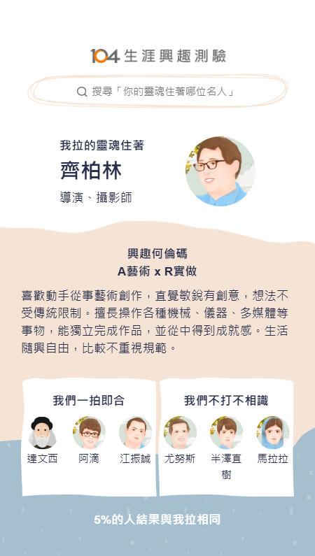

職涯測驗結果
關於我
職涯測驗結果
未來規劃
職涯目標
職涯測驗結果
你的人格特質偏向分析型與實作型，擅長邏輯推理、喜歡實際操作，適合從事系統分析、資料處理與前端開發相關職位。
我的興趣代碼
🎨 A（藝術型）：代表創意與想像
🔧 R（實作型）：代表動手做與實作力
你適合從事的工作
導演 / 攝影師
平面 / 動畫設計師
前端網頁設計
多媒體創作者
UI/UX 設計師
影像剪輯師
產品攝影 / 美術設計
系統分析師
資料工程師 / 資料分析
🎨 看我的測驗圖！
×

🏠 返回首頁
 導演 / 攝影師
導演 / 攝影師 平面 / 動畫設計師
平面 / 動畫設計師 前端網頁設計
前端網頁設計 多媒體創作者
多媒體創作者 UI/UX 設計師
UI/UX 設計師 影像剪輯師
影像剪輯師 產品攝影 / 美術設計
產品攝影 / 美術設計 系統分析師
系統分析師 資料工程師 / 資料分析
資料工程師 / 資料分析